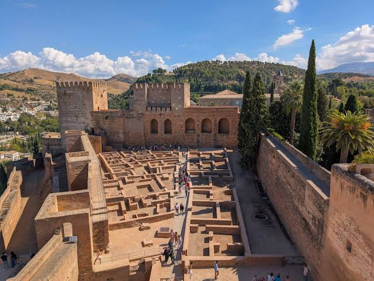
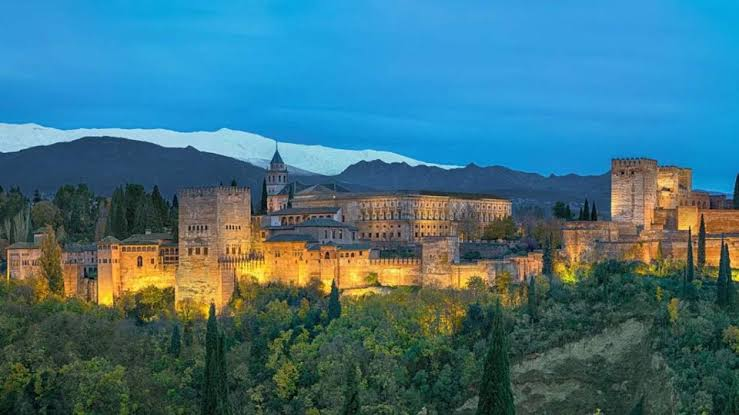

La Alhambra es un complejo monumental sobre una ciudad palatina andalusí situada en Granada, España. Consiste en un conjunto de antiguos palacios, jardines y fortalezas (alcazaba, del árabe: القصبة al-qaṣbah: 'ciudadela') inicialmente concebido para alojar al emir y la corte del reino Nazarí, más tarde como residencia de los reyes de Castilla y de sus representantes. Su singularidad artística radica en los interiores de los palacios nazaríes, cuya decoración está entre las cumbres del arte andalusí, así como en su localización y adaptación, que generó un paisaje nuevo pero totalmente integrado con la naturaleza preexistente.
Además, alberga un museo de arte andalusí, la pinacoteca principal de la ciudad y un antiguo convento convertido en parador nacional. El complejo es gestionado por la institución Patronato de la Alhambra y el Generalife. En 2016, recibió 2 615 188[2] visitantes, el segundo espacio más visitado de España, tras la Sagrada Familia de Barcelona. En 1984, fue el primer lugar de España declarado Patrimonio de la Humanidad por la Unesco, junto con el Generalife. Este nombramiento se extendió al barrio del Albaicín en 1994.
Volver